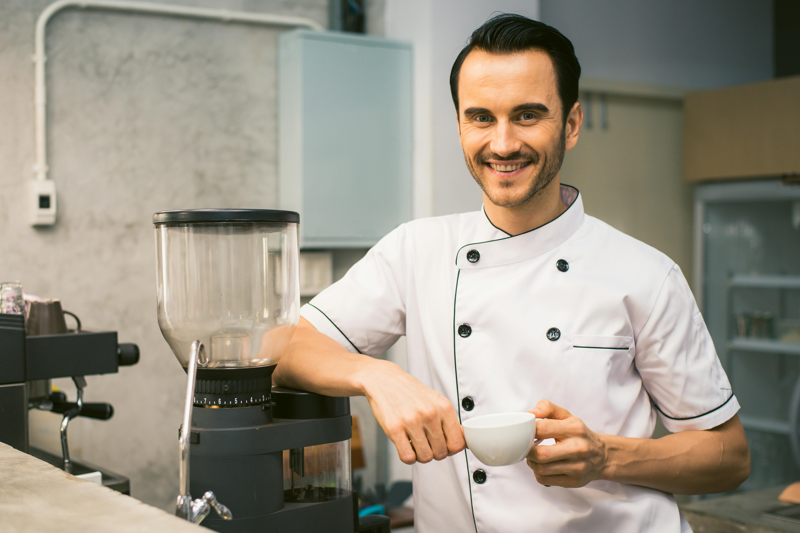
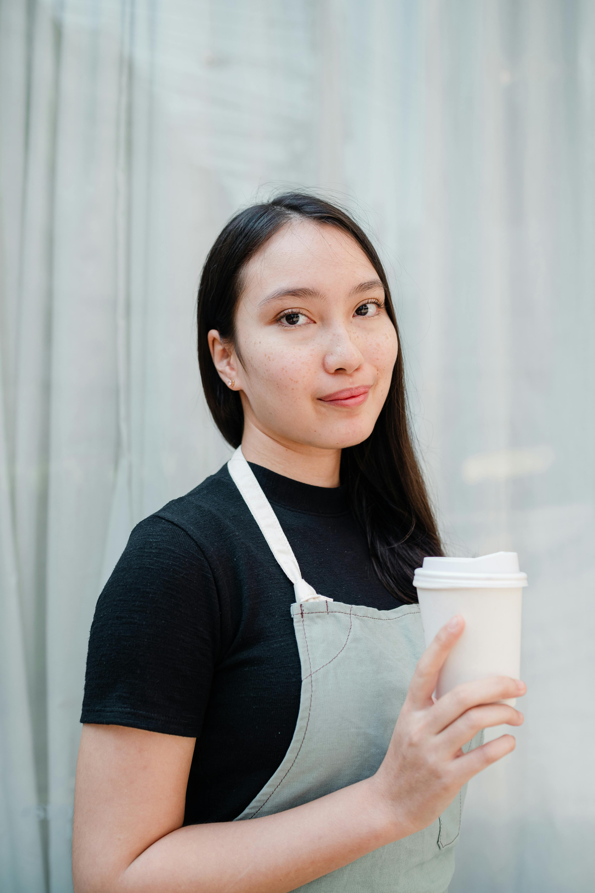

Meet Our Master Chefs

Chef Joy
With over 15 years of experience, Chef Priya brings authentic Indian flavors to life with modern twists.

Chef Ayesha
Expert in continental cuisine, Chef Rohan is known for his creativity and passion for gourmet meals.

Chef Sham
Specializing in healthy and fusion dishes, Chef Ayesha makes sure every meal is both tasty and wholesome.